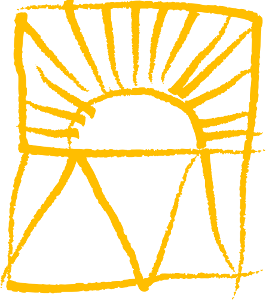
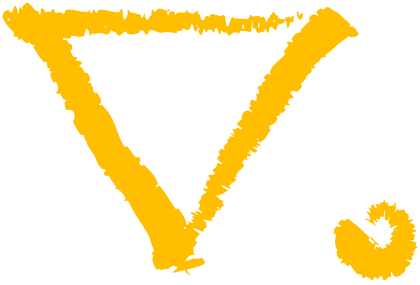
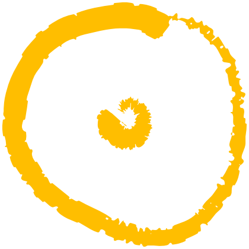
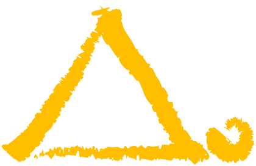
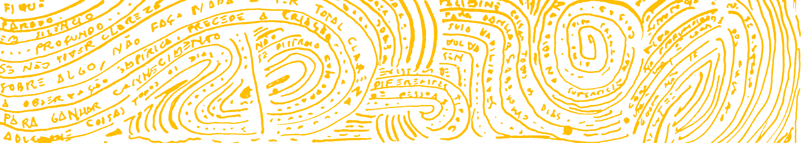
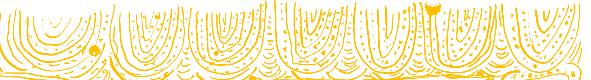

manifesto



Destinado a pessoas que desejam “voar”.

resumo
Um manifesto de uma pessoa comum que está descobrindo novas formas de evoluir por meio do autoconhecimento, da reflexão e da experiência, a fim de inspirar outras pessoas a reconhecerem seu próprio potencial e encontrarem seus caminhos de crescimento.
Ao longo dessa jornada, cheguei aos valores:
Valorizar a profundidade mais que a superficialidade;
O desenvolvimento contínuo de habilidades mais que a autoafirmação de qualidades;
A vontade de aprender mais que o reconhecimento do talento.
Ou seja, embora reconheça que o talento, os elogios, as qualidades e as aparências fazem parte da experiência humana, valorizo mais aquilo que me permite evoluir.

princípios
volte-se
Viva na profundidade das coisas. Não viva na superfície das coisas.
- Vencer requer muito esforço, perder não requer esforço algum;
- Produza um trabalho que ative o crescimento na mente das pessoas;
- Nunca se apoie nos outros. Faça você mesmo;
- Seja o bom exemplo que inspire os outros;
- Toda pessoa deve ir aonde o povo está;
- Prossiga só quando tiver clareza. Se não tiver clareza, pare e pense sobre.
observe-se
Transforme sonhos impossíveis em realidade.
- A observação empírica precede qualquer criação;
- Foque no essencial e ignore o não essencial;
- Não deixe o medo te paralisar, é preciso ficar atento e confiar em suas capacidades;
- Não perca tempo autoafirmando suas qualidades, desenvolva suas habilidades;
- Concentre em si e não se distraia com coisas artificiais.
- Se estiver no caminho certo, avante camarada! Se estiver no caminho errado, recue.
aprenda
Tudo na vida é possível com muito estudo, disciplina e dedicação.
- Para ganhar conhecimento, adicione coisas todos os dias;
- Para ganhar sabedoria, elimine coisas todos os dias;
- O saber e não fazer, ainda é não saber;
- Ouvir muito, selecionar melhor, testemunhar e registrar: é a melhor forma de aprender;
- Conhecimento é um tesouro, mas a prática repetidas vezes é a chave;
- Seu trabalho não está concluído até que esteja concluído.